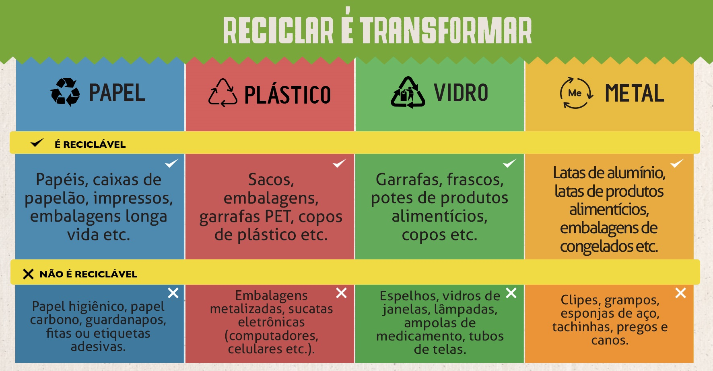

Aqui vai algumas dicas de sustentabilidade

A reciclagem reduz, de forma importante, impacto sobre o meio ambiente: diminui as retiradas de matéria-prima da natureza, gera economia de água e energia e reduz a disposição inadequada do lixo. Além disso, é fonte de renda para os catadores.
A preservação do meio ambiente começa com pequenas atitudes diárias, que fazem toda a diferença. Uma das mais importantes é a reciclagem do lixo. As vantagens da separação do lixo doméstico ficam cada vez mais evidentes. Além de aliviar os lixões e aterros sanitários, chegando até eles apenas os rejeitos (restos de resíduos que não podem ser reaproveitáveis), grande parte dos resíduos sólidos gerados em casa pode ser reaproveitada. A reciclagem economiza recursos naturais e gera renda para os catadores de lixo, parte da população que depende dos resíduos sólidos descartados para sobreviver. Segundo a última pesquisa Nacional de Saneamento Básico do Instituto Brasileiro de Geografia e Estatística (IBGE), são recolhidas no Brasil cerca de 180 mil toneladas diárias de resíduos sólidos. O rejeito é resultante de atividades de origem urbana, industrial, de serviços de saúde, rural, especial ou diferenciada. Esses materiais gerados nessas atividades são potencialmente matéria prima e/ou insumos para produção de novos produtos ou fonte de energia. Mais da metade desses resíduos é jogado, sem qualquer tratamento, em lixões a céu aberto. Com isso, o prejuízo econômico passa dos R$ 8 bilhões anuais. No momento, apenas 18% das cidades brasileiras contam com o serviço de coleta seletiva. Ao separar os resíduos, estão sendo dad os os primeiros passos para sua destinação adequada. Com a separação é possível: a reutilização; a reciclagem; o melhor valor agregado ao material a ser reciclado; as melhores condições de trabalho dos catadores ou classificadores dos materiais recicláveis; a compostagem; menor demanda da natureza; o aumento do tempo de vida dos aterros sanitários e menor impacto ambiental quando da disposição final dos rejeitos. O que é reciclável? É reciclável todo o resíduo descartado que constitui interesse de transformação de partes ou o seu todo. Esses materiais poderão retornar à cadeia produtiva para virar o mesmo produto ou produtos diferentes dos originais. Por exemplo: Folhas e aparas de papel, jornais, revistas, caixas, papelão, PET, recipientes de limpeza, latas de cerveja e refrigerante, canos, esquadrias, arame, todos os produtos eletroeletrônicos e seus componentes, embalagens em geral e outros. Como separar o lixo doméstico?
Não misture recicláveis com orgânicos - sobras de alimentos, cascas de frutas e legumes. Coloque plásticos, vidros, metais e papéis em sacos separados. Lave as embalagens do tipo longa vida, latas, garrafas e frascos de vidro e plástico. Seque-os antes de depositar nos coletores.
Papéis devem estar secos. Podem ser dobrados, mas não amassados. Embrulhe vidros quebrados e outros materiais cortantes em papel grosso (do tipo jornal) ou colocados em uma caixa para evitar acidentes. Garrafas e frascos não devem ser misturados com os vidros planos. O que não vai para o lixo reciclável? Papel-carbono, etiqueta adesiva, fita crepe, guardanapos, fotografias, filtro de cigarros, papéis sujos, papéis sanitários, copos de papel. Cabos de panela e tomadas. Clipes, grampos, esponjas de aço, canos. Espelhos, cristais, cerâmicas, porcelana. Pilhas e baterias de celular devem ser devolvidas aos fabricantes ou depositadas em coletores específicos. E as embalagens mistas: feitas de plástico e metal, metal e vidro e papel e metal? Nas compras, prefira embalagens mais simples. Mas, se não tiver opção, desmonte-a separando as partes de metal, plástico e vidro e deposite-as nos coletores apropriados. No caso de cartelas de comprimidos, é difícil desgrudar o plástico do papel metalizado, então descarte-as junto com os plásticos. Faça o mesmo com bandejas de isopor, que viram matéria-prima para blocos da construção civil. Outras dicas: Papéis: todos os tipos são recicláveis, inclusive caixas do tipo longa-vida e de papelão. Não recicle papel com material orgânico, como caixas de pizza cheias de gordura, pontas de cigarro, fitas adesivas, fotografias, papéis sanitários e papel-carbono. Plásticos: 90% do lixo produzido no mundo são à base de plástico. Por isso, esse material merece uma atenção especial. Recicle sacos de supermercados, garrafas de refrigerante (pet), tampinhas e até brinquedos quebrados. Vidros: quando limpos e secos, todos são recicláveis, exceto lâmpadas, cristais, espelhos, vidros de automóveis ou temperados, cerâmica e porcelana. Metais: além de todos os tipos de latas de alumínio, é possível reciclar tampinhas, pregos e parafusos. Atenção: clipes, grampos, canos e esponjas de aço devem ficar de fora. Isopor: Ao contrário do que muita gente pensa, o isopor é reciclável. No entanto, esse processo não é economicamente viável. Por isso, é importante usar o isopor de diversas formas e evitar ao máximo o seu desperdício. Quando tiver que jogar fora, coloque na lata de plásticos. Algumas empresas transformam em matéria-prima para blocos de construção civil.
Exemplos de cada tipo de lixo
